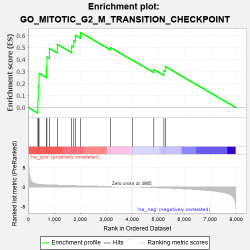
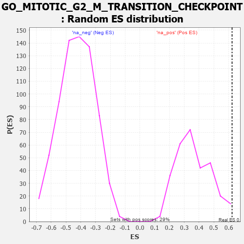

| | | Dataset | 7d |
| Phenotype | NoPhenotypeAvailable |
| Upregulated in class | na_pos |
| GeneSet | GO_MITOTIC_G2_M_TRANSITION_CHECKPOINT |
| Enrichment Score (ES) | 0.6229786 |
| Normalized Enrichment Score (NES) | 1.703926 |
| Nominal p-value | 0.013559322 |
| FDR q-value | 0.1738797 |
| FWER p-Value | 0.985 |
Table: GSEA Results Summary

Fig 1: Enrichment plot: GO_MITOTIC_G2_M_TRANSITION_CHECKPOINT
Profile of the Running ES Score & Positions of GeneSet Members on the Rank Ordered List
| PROBE | GENE SYMBOL | GENE_TITLE | RANK IN GENE LIST | RANK METRIC SCORE | RUNNING ES | CORE ENRICHMENT | | 1 | HUS1 | | | 362 | 0.735 | 0.0690 | Yes |
| 2 | CLSPN | | | 379 | 0.719 | 0.1789 | Yes |
| 3 | NBN | | | 405 | 0.696 | 0.2842 | Yes |
| 4 | MRE11 | | | 693 | 0.560 | 0.3354 | Yes |
| 5 | CDC6 | | | 709 | 0.557 | 0.4202 | Yes |
| 6 | BLM | | | 804 | 0.531 | 0.4911 | Yes |
| 7 | RINT1 | | | 1110 | 0.462 | 0.5247 | Yes |
| 8 | ORC1 | | | 1661 | 0.363 | 0.5121 | Yes |
| 9 | MRNIP | | | 1743 | 0.346 | 0.5558 | Yes |
| 10 | RAD17 | | | 1804 | 0.336 | 0.6007 | Yes |
| 11 | FOXO4 | | | 2004 | 0.304 | 0.6230 | Yes |
| 12 | FOXN3 | | | 3159 | 0.129 | 0.4980 | No |
| 13 | SYF2 | | | 4008 | -0.009 | 0.3928 | No |
| 14 | TAOK3 | | | 4823 | -0.162 | 0.3158 | No |
| 15 | ATM | | | 5210 | -0.249 | 0.3061 | No |
| 16 | CDK1 | | | 5264 | -0.262 | 0.3402 | No |
Table: GSEA details [plain text format]

Fig 2: GO_MITOTIC_G2_M_TRANSITION_CHECKPOINT: Random ES distribution
Gene set null distribution of ES for GO_MITOTIC_G2_M_TRANSITION_CHECKPOINT